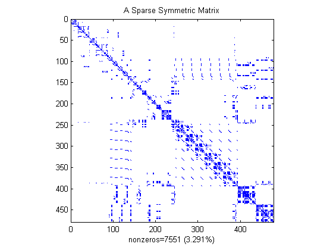
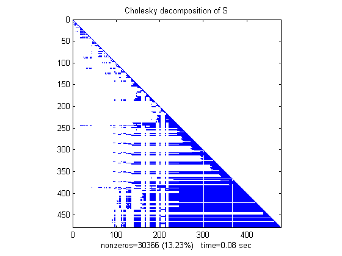
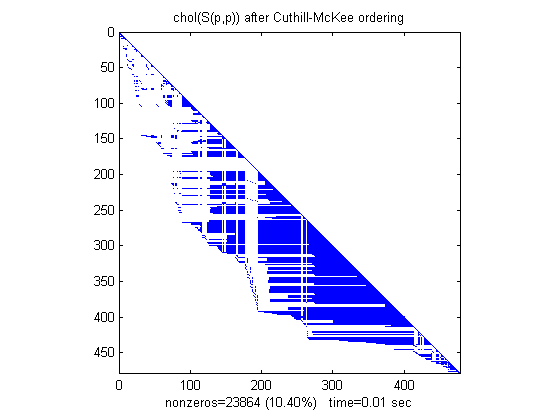
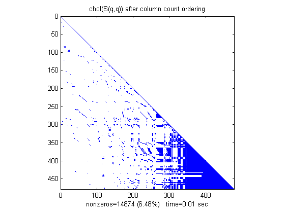

スパース行列
このデモでは、スパース行列 S の行と列を並べ替えると、S をそのコレスキー分解 S=L*L' に分解するなどの行列操作に必要な時間とストレージに影響を与える可能性があることを示します。
目次
スパース行列の可視化
SPY プロットは、行列の非零の要素を示します。
この SPY プロットは、Harwell-Boeing のテスト行列 "west0479" の一部から取り出した SPARSE 正定値対称行列で、化学プラントにおける回析列のモデル内での連結を記述する行列を示します。
load('west0479.mat') A = west0479; S = A * A' + speye(size(A)); pct = 100 / numel(A); clf; spy(S), title('A Sparse Symmetric Matrix') nz = nnz(S); xlabel(sprintf('nonzeros=%d (%.3f%%)',nz,nz*pct));
コレスキー因子の計算
S=L*L' となるコレスキー因子 L を計算します。コレスキー分解の計算により "fill-in"(非零要素) が発生するため、行列 L は、分解されていない S より非常に多くの非零要素を含みます。これはアルゴリズム速度を低下させ、ストレージ コストを増加させてしまいます。
tic, L = chol(S)'; t(1) = toc; spy(L), title('Cholesky decomposition of S') nc(1) = nnz(L); xlabel(sprintf('nonzeros=%d (%.2f%%) time=%.2f sec',nc(1),nc(1)*pct,t(1)));
計算速度を上げるための並べ替え
行列の行と列を並べ替えることで、分解で得られる行列の非零要素の量を減らし、それにより時間やストレージ コストを減らすことができる可能性があります。
MATLAB® がサポートする 3 つの異なる並べ替えを試してみましょう。
- 逆 Cuthill-McKee 法
- 列カウント法
- 最小次数法
逆 Cuthill-McKee 法を使用
SYMRCM コマンドは、すべての非零要素を対角要素の近くに移動させ、元の行列の "帯域幅" を小さくする、逆 Cuthill-McKee 並べ替えアルゴリズムを使用します。
p = symrcm(S); spy(S(p,p)), title('S(p,p) after Cuthill-McKee ordering') nz = nnz(S); xlabel(sprintf('nonzeros=%d (%.3f%%)',nz,nz*pct));

並べ替えを行った行列の分解が、時間とストレージをあまりかけないように、コレスキー分解によって得られる非零要素は帯上のみに限られます。
tic, L = chol(S(p,p))'; t(2) = toc; spy(L), title('chol(S(p,p)) after Cuthill-McKee ordering') nc(2) = nnz(L); xlabel(sprintf('nonzeros=%d (%.2f%%) time=%.2f sec', nc(2),nc(2)*pct,t(2)));
列カウント法を使用
COLPERM コマンドは、列カウント並べ替えアルゴリズムを使用して、非零要素数のより多い行と列を行列の最後に移動します。
q = colperm(S); spy(S(q,q)), title('S(q,q) after column count ordering') nz = nnz(S); xlabel(sprintf('nonzeros=%d (%.3f%%)',nz,nz*pct));

この例では、列数の並べ替えは、コレスキー分解にかかる時間とストレージを減少させますが、これは一般的には期待できません。
tic, L = chol(S(q,q))'; t(3) = toc; spy(L), title('chol(S(q,q)) after column count ordering') nc(3) = nnz(L); xlabel(sprintf('nonzeros=%d (%.2f%%) time=%.2f sec',nc(3),nc(3)*pct,t(3)));
最小次数法を使用
SYMAMD コマンドは、近似最小次数アルゴリズム (強力なグラフ理論の手法) を使用して、行列の中に大きな 0 のブロックを作成します。
r = symamd(S); spy(S(r,r)), title('S(r,r) after minimum degree ordering') nz = nnz(S); xlabel(sprintf('nonzeros=%d (%.3f%%)',nz,nz*pct));

最小次数アルゴリズムによって得られた 0 のブロックは、コレスキー分解中に貯えられます。これにより、時間とストレージ コストを大幅に削減できます。
tic, L = chol(S(r,r))'; t(4) = toc; spy(L), title('chol(S(r,r)) after minimum degree ordering') nc(4) = nnz(L); xlabel(sprintf('nonzeros=%d (%.2f%%) time=%.2f sec',nc(4),nc(4)*pct,t(4)));

結果のまとめ
labels={'original','Cuthill-McKee','column count','min degree'};
subplot(2,1,1)
bar(nc*pct)
title('Nonzeros after Cholesky factorization')
ylabel('Percent');
set(gca,'xticklabel',labels)
subplot(2,1,2)
bar(t)
title('Time to complete Cholesky factorization')
ylabel('Seconds');
set(gca,'xticklabel',labels)